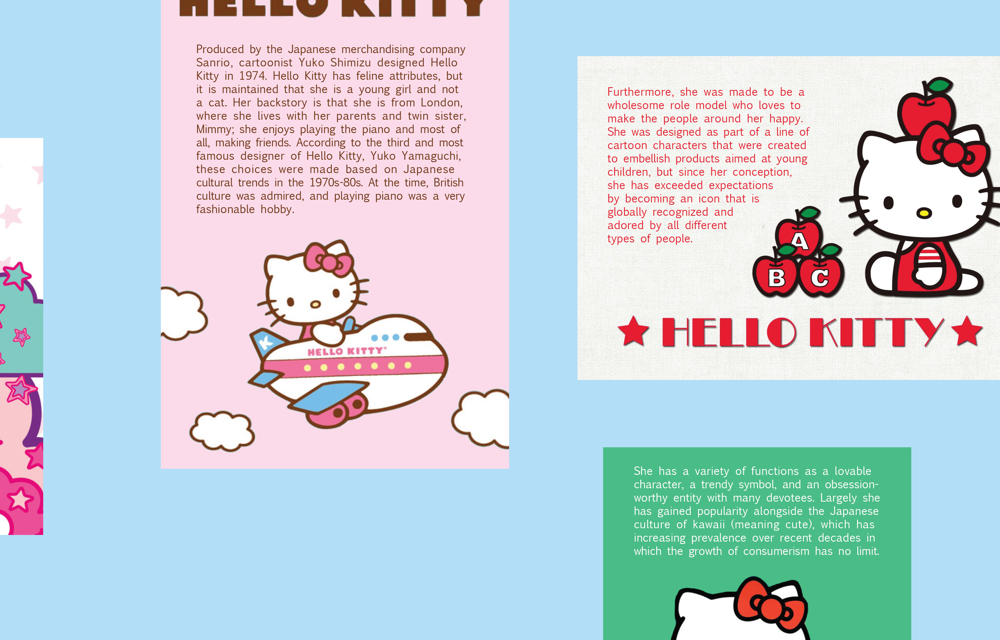

Tranceformations and Transformations Book Trailer
A video created to promote my grandmother, Sylvia 'Magogo' Glasser's book, Tranceformations and Transformations: Southern African Rock Art and Contemporary Dance.
book trailer was nominated as a finalist in the 2020 MY HERO International Film Festival.AIGA Monsters Data Vis
A systems project visualizing data from the 2017 AIGA Design Census. Through an interactive web experience, users are able to generate a monster that represents their own answers to curated questions from the original survey. In addition to the website, there is an introductory video as well as printed postcards to show different monster examples.
Team members: Maddy Cha, Katie Chen, Allissa Chen
project was featured on AIGA Eye on Design's website.

APPRISE Research Data Vis
A webpage with illustration and data visualization created to highlight research conducted at APPRISE, a nonprofit research institute that collects and analyzes data in order to assess and improve federal, state, and nonprofit-run public programs.
full webpage can be viewed here.Hello Kitty Digital Pamphlet
A selection of pages from a digital pamphlet created to display information about Hello Kitty.

Aesthetic Perceiver Responsive System
A responsive design piece based on the self-reflective idea of how we view and interpret visual artifacts. The text is curated from James Baird’s essay “Creating Art.” The content transforms over four different types of media in order to create a hierarchal system.


Insect Interactions Exhibit
A video created to tell the stories of different human-insect interactions, aiming to bridge the gap between us and them. Seeing how they are a part of our every day life, whether in a negative or positive manner, can help us to understand that we do share all of our spaces with bugs, and that without them we could not exist. Displayed in the Senior Design show at the Miller Gallery in December 2019, the exhibition design expanded on the original concept as the video jumped from screen to screen, and to get a good look, viewers were forced to crouch down at ground level.
Collab Collage Website
A website created to join users in making a collaborative digital collage.